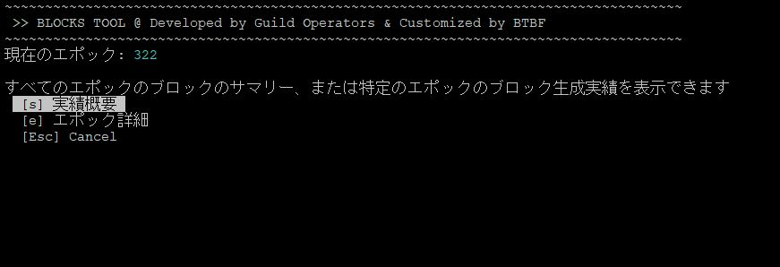
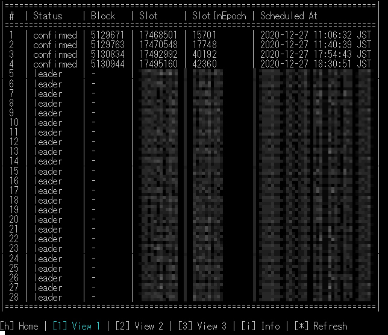

10.ステークプールブロックログ導入手順¶
ブロックログについて
このツールはPoSにおける自プールのブロック生成スケジュールを事前に取得するツールです。
制作クレジット
このツールは海外ギルドオペレーター制作のCNCLI By AndrewWestberg、logmonitor by Guild Operators、Guild LiveView、BLOCK LOG for CNToolsを組み合わせたツールとなっております。カスタマイズするにあたり、開発者のAHLNET(AHL)にご協力頂きました。ありがとうございます。
10-0. インストール要件¶
設定サーバー
- BPノード限定
稼働要件
- ４つのサービス(プログラム)をsystemd × tmuxにて常駐させます。
- ブロックチェーン同期用DBを新しく設置します(sqlite3)
- 日本語マニュアルのフォルダ構成に合わせて作成されています。
- vrf.skey と vrf.vkeyが必要です。
構成図
flowchart TB
a1[cardano-node] --> a2[logファイル]
a3 --> a5[leaderlog.service]
a3 --> a6[validate.service]
a1[cardano-node] --> a3[cncli.service]
a2 --> a4[logmonitor.service]
a3[cncli.service]
a4[logmonitor.service]
a5[leaderlog.service]
a6[validate.service]
subgraph Guild-DB
a7[cncli.db]
a8[blocklog.db]
end
subgraph ステータス通知
a9[blockcheck] --> 各アプリ
end
Guild-DB --> blocks.sh
a8[blocklog.db] --> a9[blockcheck]
a3[cncli.service] --> a7[cncli.db]
a5[leaderlog.service] --> a8[blocklog.db]
a6[validate.service] --> a8[blocklog.db]
10-1. CNCLIインストール¶
CNCLIについて
AndrewWestbergさんによって開発されたCNCLIはプールのブロック生成スケジュールを算出し、Shelley期におけるSPOに革命をもたらしました。
RUST環境を準備します
mkdir $HOME/.cargo && mkdir $HOME/.cargo/bin
chown -R $USER $HOME/.cargo
touch $HOME/.profile
chown $USER $HOME/.profile
rustupをインストールします-デフォルトのインストールを続行します（オプション1）
curl --proto '=https' --tlsv1.2 -sSf https://sh.rustup.rs | sh
1) Proceed with installation (default) 1を入力してEnter
source $HOME/.cargo/env
rustup install stable
rustup default stable
rustup update
rustup component add clippy rustfmt
依存関係をインストールし、cncliをビルドします
source $HOME/.cargo/env
sudo apt-get update -y && sudo apt-get install -y automake build-essential pkg-config libffi-dev libgmp-dev libssl-dev libtinfo-dev libsystemd-dev zlib1g-dev make g++ tmux git jq wget libncursesw5 libtool autoconf
cd $HOME/git
git clone https://github.com/AndrewWestberg/cncli
cd cncli
git checkout $(curl -s https://api.github.com/repos/AndrewWestberg/cncli/releases/latest | jq -r .tag_name)
cargo install --path . --force
CNCLIのバージョンを確認します。
cncli --version
10-2. sqlite3インストール¶
sudo apt install sqlite3
sqlite3 --version
3.31.1以上のバージョンがインストールされたらOKです。
10-3. 依存ファイルダウンロード¶
依存関係のあるプログラムをダウンロードします。
cd $NODE_HOME
mkdir scripts
cd $NODE_HOME/scripts
wget https://raw.githubusercontent.com/cardano-community/guild-operators/master/scripts/cnode-helper-scripts/cncli.sh -O ./cncli.sh
wget https://raw.githubusercontent.com/btbf/coincashew/master/guild-tools/cntools.library -O ./cntools.library
wget https://raw.githubusercontent.com/btbf/coincashew/master/guild-tools/cntools.config -O ./cntools.config
wget https://raw.githubusercontent.com/cardano-community/guild-operators/master/scripts/cnode-helper-scripts/env -O ./env
wget https://raw.githubusercontent.com/cardano-community/guild-operators/master/scripts/cnode-helper-scripts/logMonitor.sh -O ./logMonitor.sh
wget https://raw.githubusercontent.com/cardano-community/guild-operators/master/scripts/cnode-helper-scripts/gLiveView.sh -O ./gLiveView.sh
wget https://raw.githubusercontent.com/btbf/coincashew/master/guild-tools/blocks.sh -O ./blocks.sh
パーミッションを設定する
chmod 755 cncli.sh
chmod 755 logMonitor.sh
chmod 755 gLiveView.sh
chmod 755 blocks.sh
cd ../
chmod 400 vrf.vkey
設定ファイルを修正する
envファイルを修正します
PORT=`grep "PORT=" $NODE_HOME/startBlockProducingNode.sh`
b_PORT=${PORT#"PORT="}
echo "BPポートは${b_PORT}です"
sed -i $NODE_HOME/scripts/env \
-e '1,73s!#CCLI="${HOME}/.cabal/bin/cardano-cli"!CCLI="/usr/local/bin/cardano-cli"!' \
-e '1,73s!#CNODE_HOME="/opt/cardano/cnode"!CNODE_HOME='${NODE_HOME}'!' \
-e '1,73s!#CNODE_PORT=6000!CNODE_PORT='${b_PORT}'!' \
-e '1,73s!#CONFIG="${CNODE_HOME}/files/config.json"!CONFIG="${CNODE_HOME}/mainnet-config.json"!' \
-e '1,73s!#SOCKET="${CNODE_HOME}/sockets/node0.socket"!SOCKET="${CNODE_HOME}/db/socket"!' \
-e '1,73s!#BLOCKLOG_TZ="UTC"!BLOCKLOG_TZ="Asia/Tokyo"!'
cncli.shファイルを修正します
プールID取得
pool_ID=`cat $NODE_HOME/stakepoolid_hex.txt`
echo "プールIDは${pool_ID}です"
sed -i $NODE_HOME/scripts/cncli.sh \
-e '1,73s!#POOL_ID=""!POOL_ID='${pool_ID}'!' \
-e '1,73s!#POOL_VRF_SKEY=""!POOL_VRF_SKEY="${CNODE_HOME}/vrf.skey"!' \
-e '1,73s!#POOL_VRF_VKEY=""!POOL_VRF_VKEY="${CNODE_HOME}/vrf.vkey"!'
10-4. サービスファイル作成・登録¶
cd $NODE_HOME
mkdir service
cd service
cat > $NODE_HOME/service/cnode-cncli-sync.service << EOF
# file: /etc/systemd/system/cnode-cncli-sync.service
[Unit]
Description=Cardano Node - CNCLI sync
BindsTo=cardano-node.service
After=cardano-node.service
[Service]
Type=oneshot
RemainAfterExit=yes
Restart=on-failure
RestartSec=20
User=$(whoami)
WorkingDirectory=$NODE_HOME/scripts
ExecStart=/bin/bash -c "sleep 5;/usr/bin/tmux new -d -s cncli"
ExecStartPost=/usr/bin/tmux send-keys -t cncli ./cncli.sh Space sync Enter
ExecStop=/usr/bin/tmux kill-session -t cncli
KillSignal=SIGINT
RestartKillSignal=SIGINT
SuccessExitStatus=143
StandardOutput=syslog
StandardError=syslog
SyslogIdentifier=cnode-cncli-sync
TimeoutStopSec=5
[Install]
WantedBy=cardano-node.service
EOF
cat > $NODE_HOME/service/cnode-cncli-validate.service << EOF
# file: /etc/systemd/system/cnode-cncli-validate.service
[Unit]
Description=Cardano Node - CNCLI validate
BindsTo=cnode-cncli-sync.service
After=cnode-cncli-sync.service
[Service]
Type=oneshot
RemainAfterExit=yes
Restart=on-failure
RestartSec=20
User=$(whoami)
WorkingDirectory=$NODE_HOME/scripts
ExecStart=/bin/bash -c "sleep 10;/usr/bin/tmux new -d -s validate"
ExecStartPost=/usr/bin/tmux send-keys -t validate ./cncli.sh Space validate Enter
ExecStop=/usr/bin/tmux kill-session -t validate
KillSignal=SIGINT
RestartKillSignal=SIGINT
SuccessExitStatus=143
StandardOutput=syslog
StandardError=syslog
SyslogIdentifier=cnode-cncli-validate
TimeoutStopSec=5
[Install]
WantedBy=cnode-cncli-sync.service
EOF
cat > $NODE_HOME/service/cnode-cncli-leaderlog.service << EOF
# file: /etc/systemd/system/cnode-cncli-leaderlog.service
[Unit]
Description=Cardano Node - CNCLI Leaderlog
BindsTo=cnode-cncli-sync.service
After=cnode-cncli-sync.service
[Service]
Type=oneshot
RemainAfterExit=yes
Restart=on-failure
RestartSec=20
User=$(whoami)
WorkingDirectory=$NODE_HOME/scripts
ExecStart=/bin/bash -c "sleep 15;/usr/bin/tmux new -d -s leaderlog"
ExecStartPost=/usr/bin/tmux send-keys -t leaderlog ./cncli.sh Space leaderlog Enter
ExecStop=/usr/bin/tmux kill-session -t leaderlog
KillSignal=SIGINT
RestartKillSignal=SIGINT
SuccessExitStatus=143
StandardOutput=syslog
StandardError=syslog
SyslogIdentifier=cnode-cncli-leaderlog
TimeoutStopSec=5
[Install]
WantedBy=cnode-cncli-sync.service
EOF
cat > $NODE_HOME/service/cnode-logmonitor.service << EOF
# file: /etc/systemd/system/cnode-logmonitor.service
[Unit]
Description=Cardano Node - CNCLI logmonitor
BindsTo=cnode-cncli-sync.service
After=cnode-cncli-sync.service
[Service]
Type=oneshot
RemainAfterExit=yes
Restart=on-failure
RestartSec=20
User=$(whoami)
WorkingDirectory=$NODE_HOME
ExecStart=/bin/bash -c "sleep 20;/usr/bin/tmux new -d -s logmonitor"
ExecStartPost=/usr/bin/tmux send-keys -t logmonitor $NODE_HOME/scripts/logMonitor.sh Enter
ExecStop=/usr/bin/tmux kill-session -t logmonitor
KillSignal=SIGINT
RestartKillSignal=SIGINT
SuccessExitStatus=143
StandardOutput=syslog
StandardError=syslog
SyslogIdentifier=cnode-logmonitor
TimeoutStopSec=5
[Install]
WantedBy=cnode-cncli-sync.service
EOF
サービスファイルをシステムフォルダにコピーして権限を付与します
1行ずつコマンドに貼り付けてください
sudo cp $NODE_HOME/service/cnode-cncli-sync.service /etc/systemd/system/cnode-cncli-sync.service
sudo cp $NODE_HOME/service/cnode-cncli-validate.service /etc/systemd/system/cnode-cncli-validate.service
sudo cp $NODE_HOME/service/cnode-cncli-leaderlog.service /etc/systemd/system/cnode-cncli-leaderlog.service
sudo cp $NODE_HOME/service/cnode-logmonitor.service /etc/systemd/system/cnode-logmonitor.service
sudo chmod 644 /etc/systemd/system/cnode-cncli-sync.service
sudo chmod 644 /etc/systemd/system/cnode-cncli-validate.service
sudo chmod 644 /etc/systemd/system/cnode-cncli-leaderlog.service
sudo chmod 644 /etc/systemd/system/cnode-logmonitor.service
サービスファイルを有効化します
sudo systemctl daemon-reload
sudo systemctl enable cnode-cncli-sync.service
sudo systemctl enable cnode-cncli-validate.service
sudo systemctl enable cnode-cncli-leaderlog.service
sudo systemctl enable cnode-logmonitor.service
10-5. ブロックチェーンとDBを同期¶
cncli-syncサービスを開始し、ログ画面を表示します
sudo systemctl start cnode-cncli-sync.service
tmux a -t cncli
確認
「100.00% synced」になるまで待ちます。
100%になったら、Ctrl+bを押した後に d を押し元の画面に戻ります(バックグラウンド実行に切り替え)
10-6. 過去のブロック生成実績取得¶
cd $NODE_HOME/scripts
./cncli.sh init
10-7. ログファイル生成設定¶
cd $NODE_HOME
nano mainnet-config.json
- defaultScribesを下記のように書き換える
"defaultScribes": [
[
"FileSK",
"logs/node.json"
],
[
"StdoutSK",
"stdout"
]
],
"setupScribes": [
{
"scFormat": "ScJson",
"scKind": "FileSK",
"scName": "logs/node.json"
},
{
"scFormat": "ScText",
"scKind": "StdoutSK",
"scName": "stdout",
"scRotation": null
}
]
ノードを再起動する
sudo systemctl reload-or-restart cardano-node
cardano-nodeを再起動すると、以下サービスも連動して5秒間隔で再起動されます cnode-cncli-sync.service
cnode-cncli-validate.service
cnode-cncli-leaderlog.service
cnode-logmonitor.service
tmux起動確認
tmux ls
確認
ノードを再起動してから、約20秒後に4プログラムがバックグラウンドで起動中であればOKです
* cncli
leaderlog
validate
* logmonitor
便利なコマンド
●各種サービスをストップする方法
sudo systemctl stop cnode-cncli-sync.service
- cnode-cncli-validate.service
- cnode-cncli-leaderlog.service
- cnode-logmonitor.service
●各種サービスを再起動する方法
sudo systemctl reload-or-restart cnode-cncli-sync.service
- cnode-cncli-validate.service
- cnode-cncli-leaderlog.service
- cnode-logmonitor.service
プログラムのログ画面を確認します
こちらのプログラムは生成したブロックが、ブロックチェーン上に記録されているか照合するためのプログラムです
tmux a -t validate
~ CNCLI Block Validation started ~
こちらのプログラムはスロットリーダーを自動的に算出するプログラムです。
次エポックの1.5日前から次エポックのスケジュールを算出することができます。
tmux a -t leaderlog
以下の表示なら正常です。
スケジュール予定がある場合、表示されるまでに5分ほどかかります。
~ CNCLI Leaderlog started ~
Ctrl+bを押した後すぐにd でバックグラウンド実行に切り替えます(デタッチ)
こちらのプログラムはプールのノードログからブロック生成結果を抽出します。
tmux a -t logmonitor
以下の表示なら正常です。
~~ LOG MONITOR STARTED ~~
monitoring logs/node.json for traces
10-8. ブロックログを表示する¶
このツールでは上記で設定してきたプログラムを組み合わせ、割り当てられたスロットリーダーに対してのブロック生成結果をデータベースに格納し、確認することができます。
cd $NODE_HOME/scripts
./blocks.sh
便利な設定
スクリプトへのパスを通し、任意の単語で起動出来るようにする。
echo alias blocks="'cd $NODE_HOME/scripts; ./blocks.sh'" >> $HOME/.bashrc
source $HOME/.bashrc
単語を入力するだけで、どこからでも起動できます。
blocks・・・blocks.sh

（ｓ）実績概要---エポック毎のブロック生成実績参照
（ｅ）エポック詳細---個別エポックのブロック生成スケジュールおよび生成実績参照

ブロックステータス
| 項目 | 意味 |
|---|---|
| Leader | ブロック生成割り当て数 |
| Ideal | アクティブステーク（シグマ）に基づいて割り当てられたブロック数の期待値/理想値 |
| Luck | 期待値における実際に割り当てられたスロットリーダー数のパーセンテージ |
| Adopted | ブロック生成フラグ |
| Confirmed | 生成したブロックのうち確実にオンチェーンであることが検証されたブロック (ブロック生成成功) |
| Missed | スロットでスケジュールされているが、 cncli DB には記録されておらず他のプールがこのスロットのためにブロックを作った可能性 |
| Ghosted | ブロックは作成されましたが「Orphans(孤立ブロック)」となっております。 スロットバトル・ハイトバトルで敗北したか、ブロック伝播の問題で有効なブロックになっていません |
| Stolen | 別のプールに有効なブロックが登録されているため、スロットバトルで敗北した可能性 |
| Invalid | プールはブロックの作成に失敗しました。base64でエンコードされたエラーメッセージがlogmonitorに表示されます |
Invalidのエラー内容は次のコードでデコードできます
echo (base64コードを入れる) | base64 -d | jq -r
メニュー項目が文字化けする場合は、システム文字コードが「UTF-8」であることを確認してください。
echo $LANG
10-9. スケジュールを算出する¶
次エポックの1.5日前からブロック生成スケジュールを算出することができます。
blocks.shを起動し、直近にブロック生成スケジュールが無いことを確認する
blocks
ノードを再起動する
sudo systemctl reload-or-restart cardano-node
ノードを再起動してから、約20秒後に4プログラムがバックグラウンドで起動中であればOKです cnode-cncli-sync.service
cnode-cncli-validate.service
cnode-cncli-leaderlog.service
cnode-logmonitor.service
5分～10分後にblocks.shを起動する
blocks
[e] エポック詳細 を選択し
「次エポック[＊＊＊]のスロットリーダースケジュールが表示可能になっています」が表示されていればOKです
スケジュールが無い場合、上記の文言は表示されません。以下のコマンドを使って算出内容を確認してください
tmux a -t leaderlog
ブロック生成スケジュール算出のタイミングについて
算出タイミングは、エポックスロットが約302400を過ぎてから次エポックのスケジュールを取得できるようになります。(次エポックの1.5日前)
取得するには、手動でノードを再起動します。(いろんな要素があって手動運用にしています)
1エポックで1ブロック割り当てられるために必要な委任量の目安は以下の通りです。%は確率
1M 60%
2M 85%
3M 95%
プール開設時は、2エポック後から割り当てがスタートします。
303 プール登録
304 待機期間 次エポックスケジュール算出
305 委任有効 ブロック生成
306 報酬計算
307 報酬振り込み
ブロック生成ステータスを通知する
ブロックログDBに保存されるブロック生成ステータスをLINE/Slack/discord/telegramに通知することができます。
設定手順はブロック生成ステータス通知設定手順を参照してください。
10-99.CNCLI更新手順¶
以下は最新版がリリースされた場合に実行してください
cncli旧バージョンからの更新手順
注意
１時間以内にブロック生成スケジュールがないことを確認してから、以下を実施してください
rustup update
cd $HOME/git/cncli
git fetch --all --prune
git checkout $(curl -s https://api.github.com/repos/AndrewWestberg/cncli/releases/latest | jq -r .tag_name)
cargo install --path . --force
cncli --version
ノードを再起動する
sudo systemctl reload-or-restart cardano-node
ノードが同期したことを確認する
tmux a -t cncli
100% syncedになったことを確認する
各サービスを表示し、envまたはcncli.shのアップデートメッセージがある場合は"n"で拒否
tmux a -t leaderlog
tmux a -t validate
envまたはcncli.shのアップデートが必要になった場合は改めてアナウンスします。
スケジュールにないブロックが生成される場合¶
CNCLIのブロック生成スケジュールは正しい値が取得できていれば、100%正確です。
cncli.dbを再作成することで正しいスケジュールを取得することができます。
修正手順
・サービスを止める
sudo systemctl stop cnode-cncli-sync.service
cncli.dbを削除する
cd $NODE_HOME/guild-db/cncli
rm cncli.db
サービスを起動し、同期が100％になるまで待つ
sudo systemctl start cnode-cncli-sync.service
tmux a -t cncli
リーダースケジュールを再取得する
tmux a -t leaderlog
(Ctrl+C)で処理を中断する
$NODE_HOME/scripts/cncli.sh leaderlog force
cd $NODE_HOME/scripts
./cncli.sh init